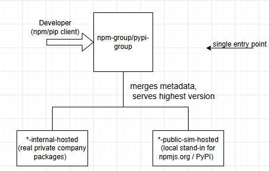
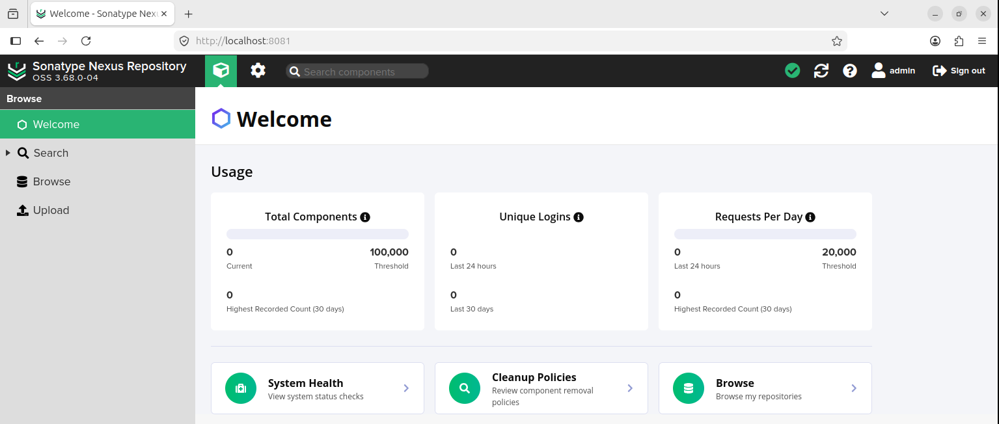
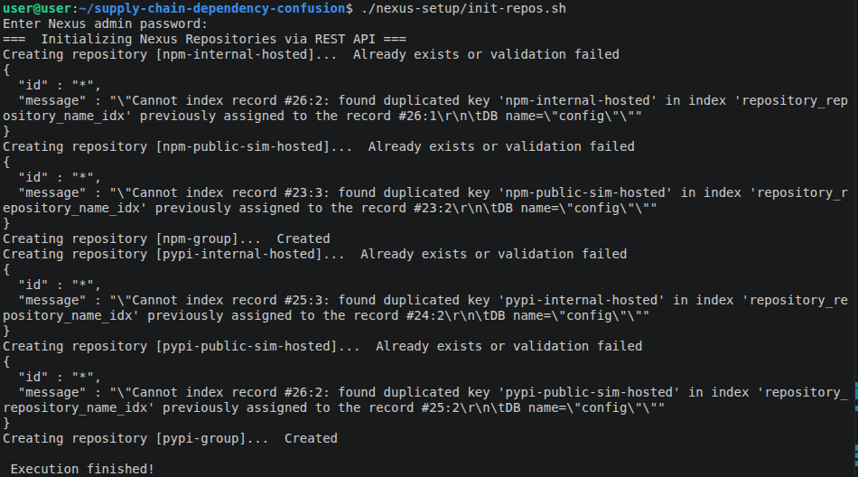
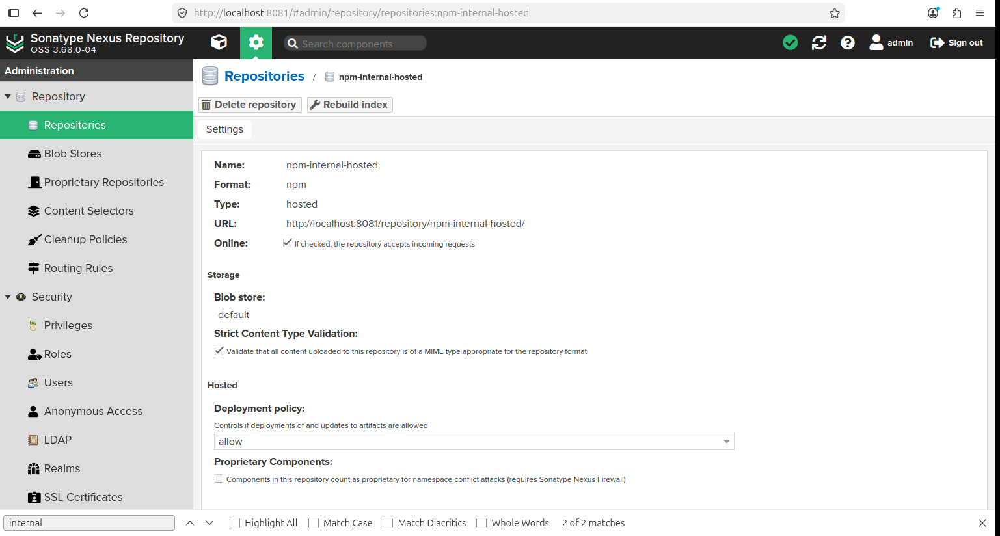
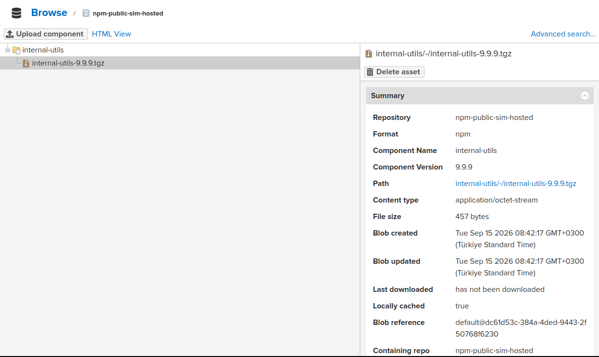
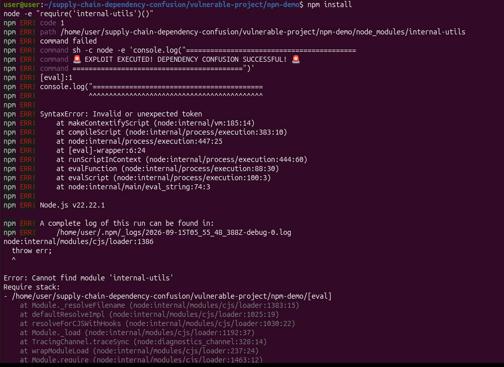
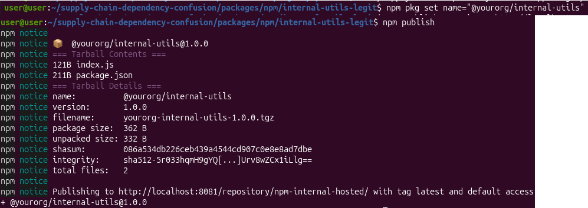
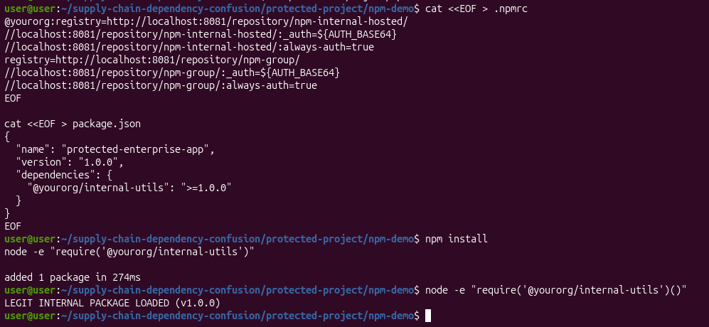
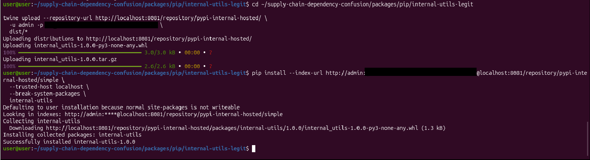
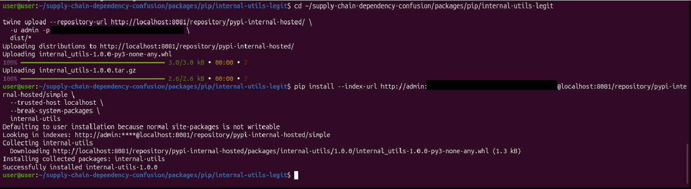

Why most write-ups don't reproduce the real bug
Most Dependency Confusion demos use two isolated registries and just switch which one the client points at. That's not what actually causes the vulnerability inside a real org. The real cause is a Group Repository: a Nexus feature that transparently aggregates a private registry and a public one behind a single URL, so developers only configure one endpoint.

A group repository resolves a package name by merging metadata from every member repository and returning the highest version found — with zero concept of which source is trusted. That behavior, not a misconfiguration, is the actual root cause. I wanted to reproduce exactly that, not a toy version of it.
Setting it up
Six repositories, provisioned via the Nexus REST API — three pairs (hosted-internal, hosted-public-sim, group) across npm and pip:
| Repo | Type | Format |
|---|---|---|
npm-internal-hosted | hosted | npm |
npm-public-sim-hosted | hosted | npm |
npm-group | group | npm |
pypi-internal-hosted | hosted | pypi |
pypi-public-sim-hosted | hosted | pypi |
pypi-group | group | pypi |




The attack
Setup: a legitimate package internal-utils@1.0.0 sits in npm-internal-hosted. I published an imposter — internal-utils@9.9.9, same name, higher version — to npm-public-sim-hosted, simulating an attacker who registered the internal package name on the public registry. The client's .npmrc points at npm-group, which is the default, "convenient" configuration most developers actually use.


npm-group lists both versions side by side — 1.0.0 from the internal repo and 9.9.9 from the public-sim one — with no indication of which is trusted. That's the vulnerability by itself: resolution through the group picks the imposter's higher version over the real package, regardless of what either one does at runtime.
I also tried to go one step further and confirm code execution from the installed package through a postinstall banner script. That part didn't go cleanly — the banner script hit a shell-quoting bug and crashed with a SyntaxError before it could print anything, and the module wasn't left resolvable afterward either. So I'm not claiming confirmed code execution here; I'm only claiming what the registry itself shows plainly: the imposter version resolves and gets selected. That's the actual vulnerability. The runtime payload is a separate — and separately breakable — problem, and I'd rather undersell this than hand you a screenshot that implies more than it shows.

Same resolution behavior reproduced for pip against pypi-internal-hosted — cleanly this time, no banner script involved.
Fix A — client-side scoping (it worked)
- npm: renamed the internal package to a scoped package,
@yourorg/internal-utils..npmrcroutes the@yourorgscope directly tonpm-internal-hosted, bypassing the group entirely. - pip: replaced
--extra-index-url(which searches every configured index and returns the highest version — the exact same vulnerable behavior) with a hard--index-urlpointed only atpypi-internal-hosted.


The protected client resolved the trusted internal 1.0.0 in both ecosystems, even with the imposter still live on the public-sim registry. This one did exactly what I expected.
Fix B — server-side Routing Rules (this is where it got interesting)
Nexus Routing Rules let you block requests matching a pattern — I configured one to block anything matching internal-.*, applied at the server level. This is documented as the server-side answer to Dependency Confusion. I expected it to close the gap even for clients that weren't configured correctly.
It didn't block anything.

What's actually going on
Nexus Routing Rules only apply to traffic passing through proxy repositories. My group repository merges two hosted repositories — not a proxy in the chain anywhere. The conflict happens entirely inside the group's merge logic, which routing rules never touch.
This matters because Routing Rules are documented, widely recommended, and genuinely effective — just not for this topology. A security team that reads the docs, configures a routing rule, and calls Dependency Confusion "handled" would be wrong, silently, in exactly the setup a lot of real Nexus instances actually run.

In a hosted+hosted group setup, client-side scoping isn't one of two options. It's the only one that works.
Reproducing it
docker compose up -d
./nexus-setup/init-repos.shThen diff vulnerable-project/npm-demo/.npmrc against protected-project/npm-demo/.npmrc — the entire fix lives in that one file. Full write-up in the repo's docs/findings.md.